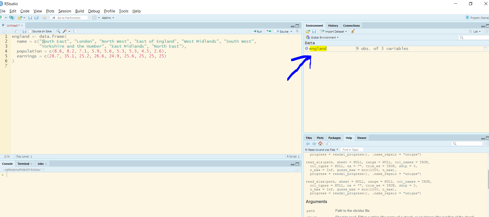

Chapter 4 R-syntax, data structures and types
4.1 Seminar
4.1.1 Creating data frames
A data frame is an object that holds data in a tabular format similar to how spreadsheets work. Variables are generally kept in columns and observations are in rows. Data frames are similar to matrices but they can store vectors of different types (e.g. numbers and text).
We start by creating a data frame with the data.frame() function. We will give each column a name (a variable name) followed by the = operator and the respective vector of data that we want to assign to that column.
england <- data.frame(
name = c("South East", "London", "North West", "East of England", "West Midlands", "South West",
"Yorkshire and the Humber", "East Midlands", "North East"),
population = c(8.6, 8.2, 7.1, 5.9, 5.6, 5.3, 5.3, 4.5, 2.6),
earnings = c(28.7, 35.1, 25.2, 26.6, 24.9, 25.6, 25, 25, 25)
)4.1.2 Working with data frames
we can display the entire dataset in spreadsheet view by clicking on the object name in the environment window.

Alternatively, you can call the object name to display the dataset in the console window. Let’s do so:
name population earnings
1 South East 8.6 28.7
2 London 8.2 35.1
3 North West 7.1 25.2
4 East of England 5.9 26.6
5 West Midlands 5.6 24.9
6 South West 5.3 25.6
7 Yorkshire and the Humber 5.3 25.0
8 East Midlands 4.5 25.0
9 North East 2.6 25.0Often, datasets are too long to be viewed to in the console window. It is a good idea to look at the first couple of rows of a datasets to get an overview of its contents. We use the square brackets [] to view the first five rows and all columns.
name population earnings
1 South East 8.6 28.7
2 London 8.2 35.1
3 North West 7.1 25.2
4 East of England 5.9 26.6
5 West Midlands 5.6 24.9v
Columns in a dataframe have names. We will often need to know the name of a column/variable to access it. We use the names() function to view all variable names in a dataframe.
[1] "name" "population" "earnings" We can access the earnings variable in multiple ways. First, we can use the $ operator. We write the name of the dataset object, followed by the $, followed by the variable name like so:
[1] 28.7 35.1 25.2 26.6 24.9 25.6 25.0 25.0 25.0We can also use the square brackets to access the earnings column.
[1] 28.7 35.1 25.2 26.6 24.9 25.6 25.0 25.0 25.0The square brackets are sometimes preferred because we could access multiple columns at once like so:
name earnings
1 South East 28.7
2 London 35.1
3 North West 25.2
4 East of England 26.6
5 West Midlands 24.9
6 South West 25.6
7 Yorkshire and the Humber 25.0
8 East Midlands 25.0
9 North East 25.0Variables come in different types such as numbers, text, logical (true/false). We need to know the type of a variable because the type affects statistical analysis. We use the str() function to check the type of each variable in our dataset.
'data.frame': 9 obs. of 3 variables:
$ name : Factor w/ 9 levels "East Midlands",..: 6 3 5 2 8 7 9 1 4
$ population: num 8.6 8.2 7.1 5.9 5.6 5.3 5.3 4.5 2.6
$ earnings : num 28.7 35.1 25.2 26.6 24.9 25.6 25 25 25The first variable in our dataset is a factor variable. Factors are categorical variables. Categories are mutually exclusive but they do not imply an ordering. For instance, “East of England” is not more or less than “West Midlands”. The variables population and earnings are both numeric variables.
'data.frame': 9 obs. of 3 variables:
$ name : Factor w/ 9 levels "East Midlands",..: 6 3 5 2 8 7 9 1 4
$ population: num 8.6 8.2 7.1 5.9 5.6 5.3 5.3 4.5 2.6
$ earnings : num 28.7 35.1 25.2 26.6 24.9 25.6 25 25 254.1.3 Amending data frames
Amending data sets usually involves adding rows or columns or removing rows or columns. We start by adding a new variable to our dataset which contains the percent of the population on income support.
To create a new variable we simply assign a new vector to the dataframe object like so:
We call the dataframe object to view our changes.
name population earnings pct_on_support
1 South East 8.6 28.7 3.0
2 London 8.2 35.1 5.3
3 North West 7.1 25.2 5.3
4 East of England 5.9 26.6 3.5
5 West Midlands 5.6 24.9 5.1
6 South West 5.3 25.6 3.3
7 Yorkshire and the Humber 5.3 25.0 5.2
8 East Midlands 4.5 25.0 4.2
9 North East 2.6 25.0 6.1We can delete the variable we just created by assigning NULL to it.
Let’s view our most recent changes.
name population earnings
1 South East 8.6 28.7
2 London 8.2 35.1
3 North West 7.1 25.2
4 East of England 5.9 26.6
5 West Midlands 5.6 24.9
6 South West 5.3 25.6
7 Yorkshire and the Humber 5.3 25.0
8 East Midlands 4.5 25.0
9 North East 2.6 25.0Adding a new row to a dataset means adding an observation. Let’s add Brittany to our dataset. We need to fill in a value for each variable. If, we do not know a value, we declare it as missing. Missings are NA for numeric variables and "" for character variables. We use the rbind() function (row bind) to add a row to our dataset.
Warning in `[<-.factor`(`*tmp*`, ri, value = "Brittany"): invalid factor
level, NA generatedLet’s examine our dataframe.
name population earnings
1 South East 8.6 28.7
2 London 8.2 35.1
3 North West 7.1 25.2
4 East of England 5.9 26.6
5 West Midlands 5.6 24.9
6 South West 5.3 25.6
7 Yorkshire and the Humber 5.3 25
8 East Midlands 4.5 25
9 North East 2.6 25
10 <NA> 4.5 <NA>We were not allowed to enter “Brittany” as a value for the name variable. This is because the variable is a factor. While it is possible to add new levels to a factor (categories such as “Midlands” are called levels), it involves a bit more advanced programming. We will solve this problem later in the type coercion section.
4.1.4 Saving data frames
Datasets can be exported in many different file formats. We recommend exporting files as “.csv” files because csv is a very common file type. Such files can be handled by all statistical packages including Microsoft’s Excel. We need to provide five arguments.
| Argument | Description |
|---|---|
| x | The name of the object |
| file | The file name |
| sep | The symbol that separates columns |
| col.names | = TRUE saves the variable names (recommended) |
| row.names | = FALSE omits the row names (recommended) |